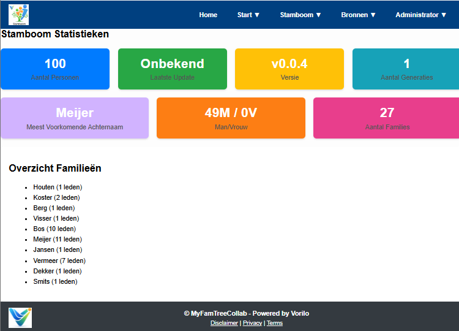

Welkom bij MyFamTreeCollab
MyFamTreeCollab is een veilig en intuïtief platform om je familiegeschiedenis te ontdekken, vast te leggen en te visualiseren, volledig lokaal in je browser, zonder dat je gegevens je apparaat verlaten.
- Bouw je stamboom met alle details die voor jou belangrijk zijn.
- Beheer je data volledig — alles wordt lokaal opgeslagen, jij beslist wat je deelt.
- Visualiseer je familie via de stamboom- en tijdlijnweergave.


Start je stamboom
Begin vandaag met het vastleggen van je familiegeschiedenis.
Start Nu

Nieuws & updates
Bekijk de laatste functies, tips en updates om je stamboom nog beter te beheren.